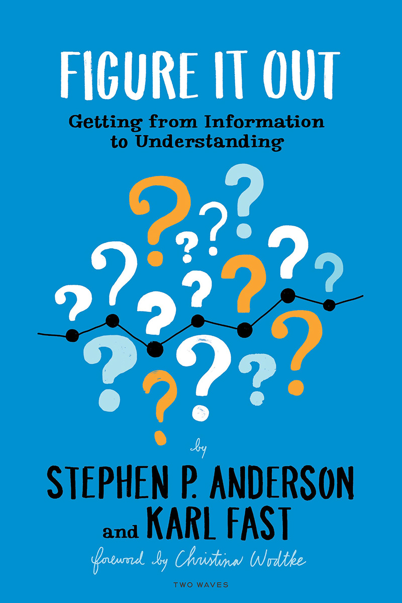

Visual SenseMaking
From Blank Page to Big Picture
Abstract
What if your notebook was not just a place to record ideas, but a laboratory to challenge them? In this session, Stephen P. Anderson introduces “Visual SenseMaking,” a process for using spatial arrangements to explore, question, and strengthen your thinking.
We'll dive into three powerful modes of inquiry: First, the inventory. How do we move from a “junk drawer” of ideas to an insightful model? Second, the interrogation. How might we tug at and pull apart provocative statements (like “all lies are bad”). Finally, we'll take on the blank page itself, and explore ways to make the most of notetaking while meeting with others.
You will leave with a practical method for turning passive note-taking into an active and rigorous dialogue with your own ideas.
- Turn passive note-taking into an active inquiry practice.
- Transform scattered concepts into coherent visual models.
- Stress-test bold claims using visual primitives.
- Apply reusable prompts to interrogate assumptions.
- Leave with a repeatable framework for visual thinking.

Speaker Bio

Stephen P. Anderson
Stephen P. Anderson is a bestselling author, speaker, and product leader who wants to make learning the hard stuff fun. He wrote the book on how we make sense of the world, Figure It Out, and founded The Mighty Minds Club, a community that shares ‘playful things to think with’. With a passion for “Visual SenseMaking,” Stephen explores the foundational grammar behind all visualizations, from the arrangement of objects on a canvas to the subtle encodings we use in everyday life. His work moves beyond simple drawing techniques to reveal the underlying patterns that allow us to wrangle complexity, interrogate ideas, and build shared understanding. Ultimately, Stephen wants to teach the world to think in more intentional, visual, and playful ways.
Watch the Session
Session Summary
Stephen tackles what he calls one of the hardest problems in visual thinking: the pure, unstructured blank canvas. Stephen's goal is to convert the audience from finding the blank screen “scary” to “manageable,” if not “thrilling,” by demystifying the process of creating visuals from scratch.
The Problem of the Blank Canvas
Stephen opens by demonstrating that popular digital whiteboard tools like Miro and Mural immediately prompt users with templates. Data shows that the overwhelming majority of people faced with a completely empty screen, one with no templates or frameworks, never return to the tool. The core issue is summarized by a quote from Dan Safer: the blank canvas problem is not just the absence of content, but the lack of initial direction. This forces users to simultaneously invent both the material (content) and the structure needed to make progress.
To overcome this, Stephen outlines three primary “blank canvas” scenarios and the corresponding visual strategies. His entire process, born from 25–30 years of creating UIs, facilitation activities, and concept models, emphasizes that every visual journey begins with a framing question or bundle of questions.
Strategy 1: The Inventory (Inspect and Organize)
This scenario involves having a collection of roughly similar concepts (e.g., types of gatherings, rice cooker models, or food expiration dates) and needing to organize them for clarity. Stephen advises against immediately reaching for a generic structure like the 2×2 matrix. Instead, the strategy involves a two-pronged approach:
- Try out more visuals: Consciously build a personal bank of visual primitives—a catalog of diverse models beyond standard matrices (e.g., honeycombs, stacked planes, triangles, etc.)—to try on the concepts.
- Inspect the concepts: This crucial step involves digging into the attributes of each concept. Stephen advocates starting workshops with physical objects (like dice or junk drawer items) to bridge participants’ innate organizational skills (like arranging a pantry) with abstract conceptual ideas.
Inspection leads to a four-step process: Select (Collect and Curate) → Inspect → Organize (by Sequence, Comparison, or System) → Iterate.
Strategy 2: The Provocation (Visual Interrogation)
The second scenario begins not with a collection of concepts, but with a statement or idea that requires deeper inspection (e.g., “Competition is a great thing,” “All lies are bad”). The method here is Visual Interrogation, which involves actively wrestling with the idea using diverse visual patterns.
This requires an iterative process of testing the statement against various structures—flipping spectrums, adding new dimensions, and invoking established frameworks (like the Flow/Skill matrix) to see where the concept leads. The goal is to evolve the visual until a compelling and insightful model emerges, often guided by the number of concepts and the relationships between them.
Strategy 3: Tabula Rasa (Capture, Encode, and Arrange)
This final, pure blank canvas scenario involves capturing notes in real-time, such as during a meeting or an interview. The key insight is to treat the digital whiteboard not as a linear text editor, but as a three-dimensional space for encoding information as it is captured.
- Use one idea per sticky note.
- Use color for meaning (e.g., questions in one color, answers in another).
- Use spatial arrangement to group related ideas.
- Use size, borders, and icons (dual coding) to add emphasis and context.
- Listen closely to your language: metaphors and words related to placement or sequence often provide literal visual instructions (e.g., visualize “the barrier to this is” as a block, or make “the biggest challenge” the largest object).
In concluding the presentation, Stephen addresses the role of AI. He warns that asking an LLM for an answer is a passive act that hinders learning. To use AI beneficially for sense-making, he encourages active inspection, such as running the same query on three different LLMs and then visually reconciling the conflicting outputs to actively construct personal knowledge. Ultimately, visual sense-making is an active process that uses space, structure, and intentional encoding to move from a state of questioning to one of clarity.
Resources
- üó∫Ô∏è Visual Summary of the conference
- üìÉ Presentation Slides